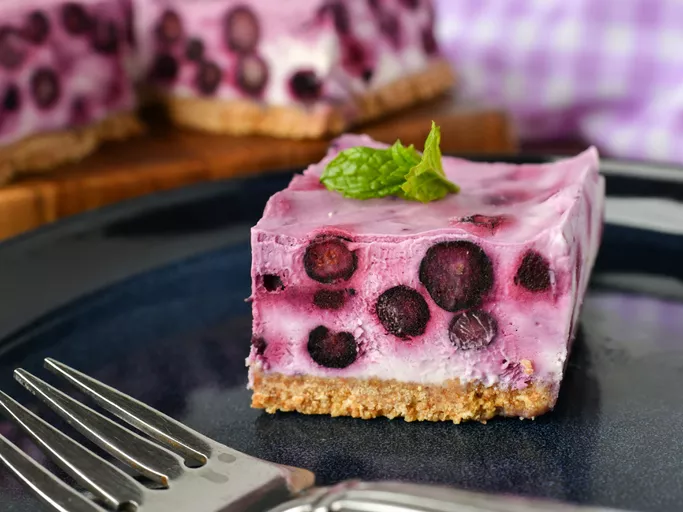

Sweet Blue Treat

Ingredients
- 1 ½ cups graham cracker crumbs
- 3 tablespoons white sugar
- ½ cup butter, melted
- 1 (8 ounce) package cream cheese, softened
- 1 cup white sugar
- 2 teaspoons vanilla extract
- ½ teaspoon lemon juice
- ¼ teaspoon salt
- 1 (8 ounce) tub frozen whipped topping, thawed
- 3 cups frozen blueberries
Directions
- Stir graham cracker crumbs and 3 tablespoons sugar together in a medium bowl; mix in melted butter until well combined. Sprinkle evenly into the bottom of a 9-inch square baking dish; pack down into a solid crust. Set aside.
- Beat cream cheese and 1 cup sugar together in a large bowl with an electric mixer until smooth; mix in vanilla, lemon juice, and salt. Stir in whipped topping until well blended, then fold in frozen blueberries. Spoon into the prepared crust and spread evenly.
- Cover with plastic wrap and refrigerate for at least 1 hour before slicing into squares and serving.